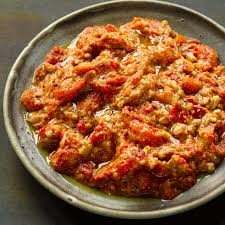
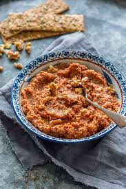

| |
 |  |
|---|
Ingredients
2 red bell peppers
2 slices bread, preferably white or sourdough
1/2 c. walnuts
Juice of 1/2 lemon
2 tsp. aleppo pepper
1/2 tsp. paprika
1 clove garlic
1 tbsp. pomegranate molasses
3 tbsp. extra-virgin olive oil
Kosher salt
Freshly ground black pepper
Directions
Step 1
Roast peppers by placing over a flame of a gas burner until well charred all over, about 2 minutes per side. Alternatively, cut peppers in half and remove stem and seeds. Place cut side down on a parchment lined baking sheet and bake at 475° until peppers are well charred, about 30 minutes.
Step 2
Place peppers immediately into a large bowl and cover tightly with plastic wrap. Let steam for about 10 minutes. Remove from bowl and peel charred skin off of peppers. It should fall off easily, but you can use the back of your knife to help. Discard skin, seeds, and stem. Slice peppers.
Step 3
Preheat oven to 300°. Tear bread to fit into a food processor, then pulse into rough bread crumbs. Measure out ¾ cup of bread crumbs and spread out on a small baking sheet and bake until dried out, about 10 minutes. Wipe out food processor and save any extra bread crumbs for another use.
Step 4
Place walnuts on another small baking sheet and bake until toasted and fragrant, about 15 minutes.
Step 5
Add roasted bell peppers, bread crumbs, toasted walnuts, lemon juice, aleppo, paprika, garlic, and pomegranate molasses to food processor and blend until well combined. With motor running, slowly add oil. Season with salt and pepper.
Step 6
Keep refrigerated until ready to serve.